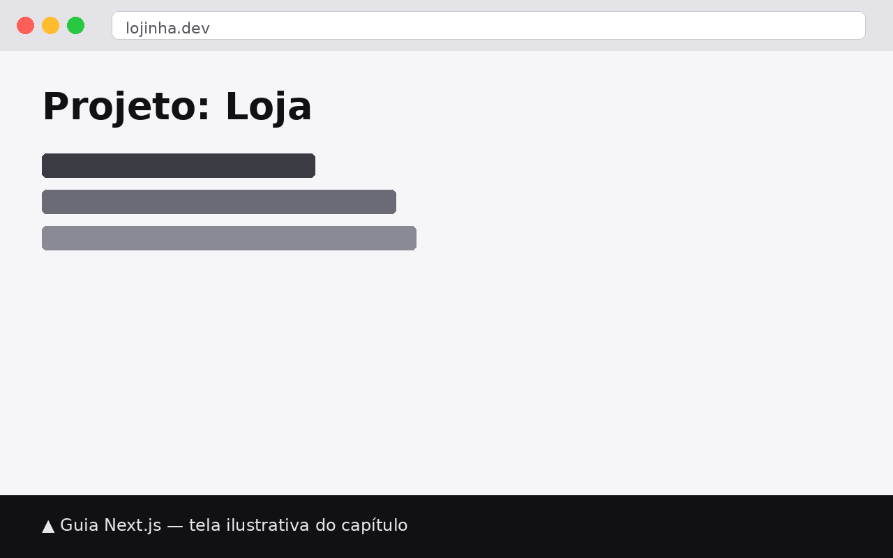

Projeto: Loja com carrinho, Server Actions e Stripe
A Ana quer vender seus bolos online. Nesta projeto você monta a lojinha inteira: produtos listados de forma estática (rápido), um carrinho que vive num cookie atualizado por Server Actions (sem API separada!) e o pagamento redirecionando para o checkout hospedado do Stripe, com webhook para confirmar o pedido.
- Server Actions: arquivo
'use server'com funções async que recibenFormData - Gravar o carrinho em
cookies()dentro da action +revalidatePath('/') - Form com
<form action={addToCart}>euseFormStatuspara o botão "adicionando…" - Stripe: criar sessão de checkout no servidor e redirecionar (
redirectToCheckout/ URL da sessão) - Webhook em
app/api/stripe/webhook/route.jscom verificação de assinatura
A ideia: o pedido no balcão sem papelzinho
Numa loja física, o cliente pega o produto e o atendente anota no pedido — o pedido não fica grudado no produto, fica numa fichinha separada. No Next.js, o Server Action é o atendente: o navegador manda um <form action={…}> (ou chama a função direto) e o servidor executa a função — ler/gravar cookie, consultar o banco, chamar a API do Stripe — sem existir uma API REST no meio. O carrinho da Ana vai numa fichinha (cookie) lida e gravada no servidor, e a página é revalidada com revalidatePath para mostrar o carrinho novo.
O pagamento segue o mesmo fluxo seguro: o servidor cria uma sessão de checkout no Stripe (com os itens e URLs de sucesso/cancelamento) e manda o navegador para a página hospedada do Stripe (PCI-compliant — o cartão nunca passa pelo seu servidor). Quando o cliente paga, o Stripe avisa seu servidor pelo webhook (uma URL que recebe POSTs assinados) e aí você marca o pedido como pago no banco.
Passo 1 — produtos e Server Action do carrinho
export const PRODUTOS = [
{ id: 'bolo-cenoura', nome: 'Bolo de cenoura', preco: 35.0, img: '/bolos/cenoura.jpg' },
{ id: 'bolo-chocolate', nome: 'Bolo de chocolate', preco: 40.0, img: '/bolos/chocolate.jpg' },
{ id: 'torta-limao', nome: 'Torta de limão', preco: 45.0, img: '/bolos/limao.jpg' },
];
export function pegarProduto(id) {
return PRODUTOS.find(p => p.id === id);
}
'use server';
import { cookies } from 'next/headers';
import { revalidatePath } from 'next/cache';
import { pegarProduto } from '@/lib/produtos';
export async function addToCart(formData) {
const id = formData.get('produtoId');
const produto = pegarProduto(id);
if (!produto) return;
const jar = await cookies();
const atual = JSON.parse(jar.get('carrinho')?.value || '{}');
atual[id] = (atual[id] || 0) + 1;
jar.set('carrinho', JSON.stringify(atual), { httpOnly: true, path: '/', maxAge: 60 * 60 * 24 * 7 });
revalidatePath('/'); // a home passa a mostrar o carrinho atualizado
}
export async function removerDoCart(formData) {
const id = formData.get('produtoId');
const jar = await cookies();
const atual = JSON.parse(jar.get('carrinho')?.value || '{}');
delete atual[id];
jar.set('carrinho', JSON.stringify(atual), { httpOnly: true, path: '/' });
revalidatePath('/');
}
Passo 2 — páginas: home (produtos) e carrinho
import Image from 'next/image';
import { PRODUTOS } from '@/lib/produtos';
import { addToCart } from './actions';
import Carrinho from './Carrinho';
export const dynamic = 'force-dynamic'; // lê cookie → SSR (carrinho sempre fresco)
export default function Home() {
return (
<main>
<Carrinho />
<h1>🍰 Loja da Ana</h1>
<div style={{ display: 'grid', gridTemplateColumns: 'repeat(3, 1fr)', gap: 16 }}>
{PRODUTOS.map(p => (
<div key={p.id} style={{ border: '1px solid #ccc', padding: 12 }}>
<Image src={p.img} alt={p.nome} width={300} height={200} />
<h3>{p.nome}</h3>
<p>R$ {p.preco.toFixed(2)}</p>
<form action={addToCart}>
<input type="hidden" name="produtoId" value={p.id} />
<BotaoAdicionar />
</form>
</div>
))}
</div>
</main>
);
}
'use client';
import { useFormStatus } from 'react-dom';
export default function BotaoAdicionar() {
const { pending } = useFormStatus();
return <button disabled={pending}>{pending ? 'Adicionando…' : '🛒 Adicionar'}</button>;
}
import { cookies } from 'next/headers';
import { PRODUTOS } from '@/lib/produtos';
import { removerDoCart } from './actions';
import { checkout } from './stripe-actions';
export default async function Carrinho() {
const jar = await cookies();
const carrinho = JSON.parse(jar.get('carrinho')?.value || '{}');
const itens = Object.entries(carrinho)
.map(([id, qtd]) => ({ ...PRODUTOS.find(p => p.id === id), qtd }))
.filter(i => i.nome);
if (!itens.length) return <p>🛒 Carrinho vazio</p>;
return (
<aside style={{ border: '1px solid #999', padding: 12 }}>
<h2>🛒 Carrinho</h2>
<ul>{itens.map(i => (
<li key={i.id}>
{i.nome} × {i.qtd} — R$ {(i.preco * i.qtd).toFixed(2)}
<form action={removerDoCart}>
<input type="hidden" name="produtoId" value={i.id} />
<button>remover</button>
</form>
</li>
))}</ul>
<form action={checkout}>
{itens.map(i => <input key={i.id} type="hidden" name={`qtd_${i.id}`} value={i.qtd} />)}
<button>💳 Pagar com Stripe</button>
</form>
</aside>
);
}
Passo 3 — checkout com Stripe e webhook
'use server';
import Stripe from 'stripe';
import { redirect } from 'next/navigation';
import { PRODUTOS } from '@/lib/produtos';
const stripe = new Stripe(process.env.STRIPE_SECRET_KEY); // segredo: só no servidor
export async function checkout(formData) {
const lineItems = PRODUTOS
.filter(p => formData.get(`qtd_${p.id}`))
.map(p => ({
price_data: {
currency: 'brl',
product_data: { name: p.nome },
unit_amount: Math.round(p.preco * 100), // centavos
},
quantity: Number(formData.get(`qtd_${p.id}`)),
}));
const session = await stripe.checkout.sessions.create({
mode: 'payment',
line_items: lineItems,
success_url: `${process.env.NEXT_PUBLIC_URL}/sucesso?session_id={CHECKOUT_SESSION_ID}`,
cancel_url: `${process.env.NEXT_PUBLIC_URL}/`,
});
redirect(session.url); // manda o cliente para a página de pagamento do Stripe
}
import Stripe from 'stripe';
import { NextResponse } from 'next/server';
const stripe = new Stripe(process.env.STRIPE_SECRET_KEY);
const webhookSecret = process.env.STRIPE_WEBHOOK_SECRET;
export async function POST(req) {
const body = await req.text();
const sig = req.headers.get('stripe-signature');
let event;
try {
event = stripe.webhooks.constructEvent(body, sig, webhookSecret); // valida a assinatura
} catch (e) {
return NextResponse.json({ erro: 'assinatura inválida' }, { status: 400 });
}
if (event.type === 'checkout.session.completed') {
const session = event.data.object;
console.log('✅ pagamento confirmado:', session.id);
// aqui: salva o pedido no banco (Prisma) e manda e-mail de confirmação
}
return NextResponse.json({ received: true });
}
NEXT_PUBLIC_URL=http://localhost:3000 STRIPE_SECRET_KEY=sk_test_… STRIPE_WEBHOOK_SECRET=whsec_… # vem de: stripe listen --forward-to localhost:3000/api/stripe/webhook

Missão: no código abaixo, a função que adiciona ao carrinho está sem a diretiva de servidor. Adicione 'use server'; na primeira linha do arquivo (é assim que o Next.js sabe que essa função roda no servidor e pode mexer em cookie). Rode e clique em Verificar missão.
// TODO: 'use server';
async function addToCart(formData) {
const id = formData.get('produtoId');
return { ok: true, id };
}
function App() {
const [msg, setMsg] = React.useState('');
return (
<div>
<h1>🛒 Carrinho</h1>
<button onClick={async () => setMsg(JSON.stringify(await addToCart(new FormData())))}>
adicionar (chama a action)
</button>
<p>{msg}</p>
</div>
);
}'use server';
async function addToCart(formData) {
const id = formData.get('produtoId');
return { ok: true, id };
}
function App() {
const [msg, setMsg] = React.useState('');
return (
<div>
<h1>🛒 Carrinho</h1>
<button onClick={async () => setMsg(JSON.stringify(await addToCart(new FormData())))}>
adicionar (chama a action)
</button>
<p>{msg}</p>
</div>
);
}Quando dá errado
'use server') como action do form:Error: Functions cannot be passed directly to Client Components…
→ a action precisa ser async e marcada com 'use server' (no arquivo todo ou na função:
async function minhaAction() { 'use server'; … })
localhost sozinho. Use o CLI: stripe listen --forward-to localhost:3000/api/stripe/webhook e copie o whsec_… para o .env.local. Em produção, cadastre a URL em Stripe → Developers → Webhooks.stripe listen --forward-to localhost:3000/api/stripe/webhook Ready! Your webhook signing secret is whsec_…
Exercícios
Uma Server Action é:
Depois de mudar o carrinho no cookie, para a página mostrar o valor novo usa-se:
No checkout do Stripe, o cartão do cliente nunca passa pelo seu servidor porque:
Complete a diretiva que transforma o arquivo inteiro em Server Actions:
Complete a função que revalida a home após mudar o carrinho: